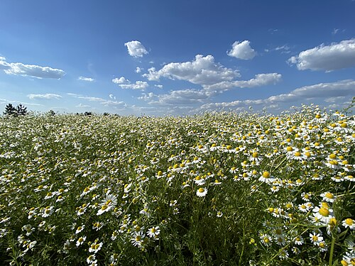
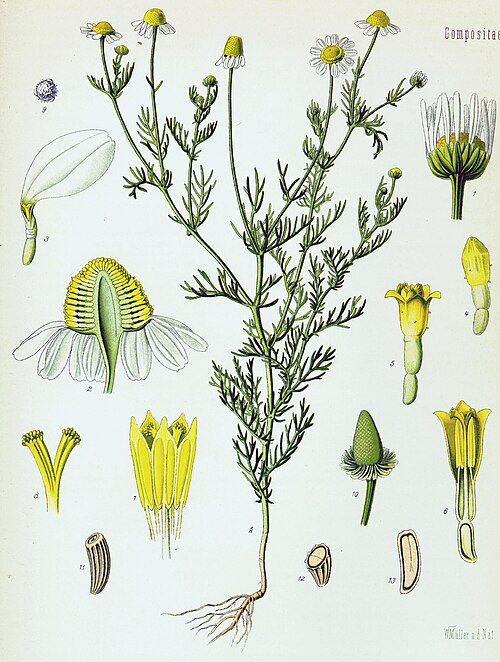

Rumianek pospolity
Matricaria chamomilla (M. recutita) · rodzina astrowate (Asteraceae)



Występowanie
Cała Polska, pola, ugory
Wysokość
15–50 cm
Kwitnienie
V – VIII
Zbiór
VI – VIII (kwiaty otwarte)
Surowiec
Koszyczki kwiatowe
Zapach
Intensywny, jabłkowy
Opis i występowanie
Roślina jednoroczna, silnie aromatyczna (zapach „jabłkowy" — stąd grecka nazwa chamaimelon = jabłko na ziemi). Łodyga rozgałęziona, liście pierzasto-podzielone, nitkowate. Koszyczki kwiatowe z białymi języczkowatymi kwiatami zewnętrznymi i żółtymi rurkowatymi w środku — z charakterystycznym pustym, stożkowatym dnem kwiatowym (klucz do odróżnienia od podobnych roślin!).
Rośnie na polach (szczególnie pszenicy), ugorach, przydrożach, przy płotach. Lubi gleby piaszczyste, lekko kwaśne. Często uprawiany w ogródkach ziołowych.
⚠ Rumianek bezpromieniowy (Matricaria discoidea) = brak białych płatków, tylko żółte. Maruna bezwonna (Tripleurospermum inodorum) = wygląda jak rumianek, ale nie pachnie i ma pełne dno. Tylko pachnący i z pustym dnem = prawdziwy rumianek leczniczy!
Skład
| Składnik | Co daje |
|---|---|
| Olejek eteryczny (chamazulen — niebieski!) | Przeciwzapalne, przeciwskurczowe |
| α-bisabolol | Łagodzi błony śluzowe, gojenie |
| Flawonoidy (apigenina) | Przeciwskurczowe, uspokajające |
| Spiroketale | Antybakteryjne |
| Kwas salicylowy | Łagodne działanie przeciwbólowe |
| Garbniki, śluz | Ściągające, kojące |
Na co pomaga
- Żołądek — niestrawność, wzdęcia, kolka, nadkwasota.
- Zapalenia jamy ustnej, gardła, dziąseł, afty — płukanki, gargle.
- Bezsenność, zdenerwowanie — łagodne ziele uspokajające, bezpieczne dla dzieci.
- Bolesne miesiączki — działanie rozkurczowe.
- Zapalenie spojówek, jęczmień — okłady na oczy (przesiewany napar!).
- Skóra — odparzenia (zwłaszcza u dzieci), egzemy, lekkie poparzenia.
- Drogi moczowe — łagodzi stany zapalne pęcherza.
- Zapalenie zatok, katar — inhalacje.
- Hemoroidy — nasiadówki z naparu.
Zbiór i suszenie
- Kiedy: trzeci-czwarty dzień po rozkwitnięciu, gdy płatki białe są jeszcze poziome (nie opadnięte). Najlepiej w słoneczne dni, między 9-12.
- Jak: tylko koszyczki kwiatowe, najlepiej grzebieniem do zbioru rumianku lub odrywając paznokciem.
- Suszenie: w cieniu, max 35°C (olejek odparowuje!), cienką warstwą.
- Przechowywanie: w szczelnych słoikach z dala od światła, max 12 mies.
Przepisy
🍵 Napar — podstawa wszystkiego
- Łyżkę suchych koszyczków zalej szklanką wrzątku.
- Przykryj spodkiem (olejek by nie wyparował), parzy 8-10 minut.
- Pij 2-3× dziennie po posiłku (na żołądek) lub przed snem (uspokajająco).
💨 Inhalacja na katar i zatoki
- 3 łyżki suszu zalej litrem wrzątku w misce.
- Przykryj głowę ręcznikiem, pochyl się nad miską (30 cm).
- Wdychaj parę nosem 10-15 minut. Oczy zamknięte.
- Świetne na początek przeziębienia.
⚠ Uwaga na poparzenia parą! Sprawdź temperaturę dłonią.
👁 Okłady na oczy (zapalenie, jęczmień)
- Zaparz mocny napar, przecedź dwukrotnie przez gęstą gazę (drobiny pyłku drażnią oczy!).
- Ostudź do temperatury ciała.
- Zmocz waciki kosmetyczne, połóż na zamknięte powieki na 10-15 minut.
- Powtarzaj 3× dziennie.
🛁 Kąpiel rumiankowa dla niemowląt
- Garść suszu zalej 2 l wrzątku, odstaw na 30 min.
- Przecedź, dodaj do wanny z ciepłą wodą do kąpieli.
- Łagodzi pieluszkowe odparzenia, swędzenie, atopowe skóry.
- Dla dorosłych: relaks, łagodzenie podrażnień.
🍯 Syrop rumiankowo-miodowy na kaszel u dzieci
- Zaparz mocny napar z 3 łyżek rumianku w 200 ml wody.
- Przecedź, ostudź do 40°C (nie wyższej — miód straci właściwości).
- Dodaj 200 ml płynnego miodu, dobrze wymieszaj.
- Przelej do szklanej butelki. Trzymaj w lodówce do 2 tygodni.
- Łyżeczka 3× dziennie.
⚠ Dzieciom poniżej 1 roku — bez miodu (ryzyko botulizmu).
✓ Zalety
- Bezpieczny dla dzieci od pierwszych miesięcy (zewnętrznie) i od roku (doustnie)
- Bardzo szerokie zastosowanie — od żołądka po skórę i oczy
- Dostępny wszędzie (apteka, sklep, łąka)
- Łagodny smak — łatwo zachęcić dzieci do picia
- Działa zarówno wewnętrznie jak i zewnętrznie
- Wszechstronny: napar, syrop, kąpiel, okłady, inhalacja
- Doskonale komponuje się z miętą, lipą, melisą
✗ Wady i przeciwwskazania
- Alergia na rośliny astrowate (rumianek, krwawnik, arnika)
- Drobinki pyłku mogą drażnić oczy — zawsze przecedzaj 2× przed okładami!
- Maruna i rumianek bezpromieniowy łatwo pomylić z prawdziwym
- Bardzo długie stosowanie może zmniejszać wchłanianie żelaza
- Olejek eteryczny może podrażniać skórę — zawsze rozcieńczać
- Ostrożnie z lekami przeciwzakrzepowymi (apigenina)
Ciekawostki
- Polska jest jednym z największych producentów rumianku na świecie. Eksport do Niemiec, USA, krajów arabskich.
- Olejek rumiankowy ma kolor intensywnie niebieski dzięki chamazulenowi — powstaje dopiero podczas destylacji.
- Łacińska nazwa matricaria od „matka" — używany od wieków na bolesne miesiączki i po porodzie.
- W Egipcie poświęcony bogu Słońca Ra, w Grecji bogini Demeter.
- „Test pustego dna": jeśli przekroisz koszyczek wzdłuż i widzisz pusty stożek — to rumianek. Pełne dno → to maruna lub coś innego.